QField
Weil Daten draussen sind
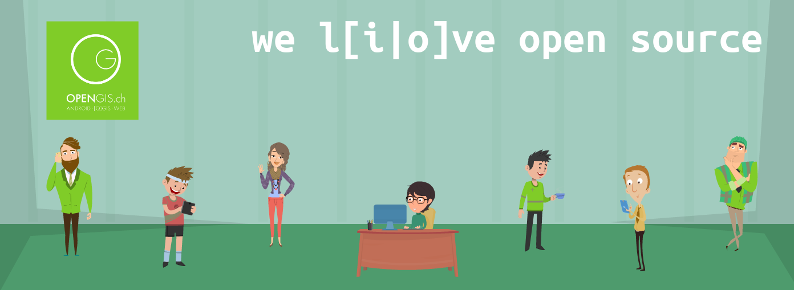
Open source Geoninjas
Made in Switzerland
Wieso QField?

Weil
Daten ausserhalb des Büros sind
Was ist QField?
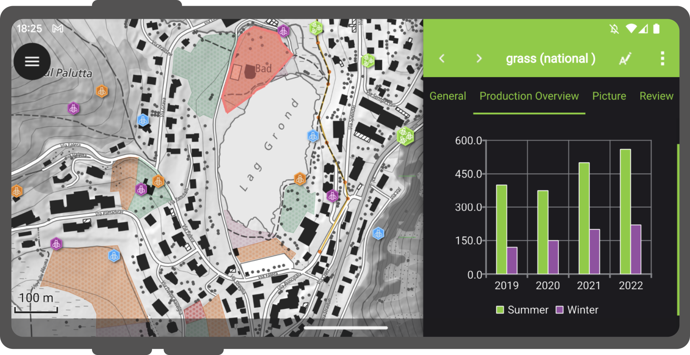
Die mobile Datenerfassungsapp für QGIS
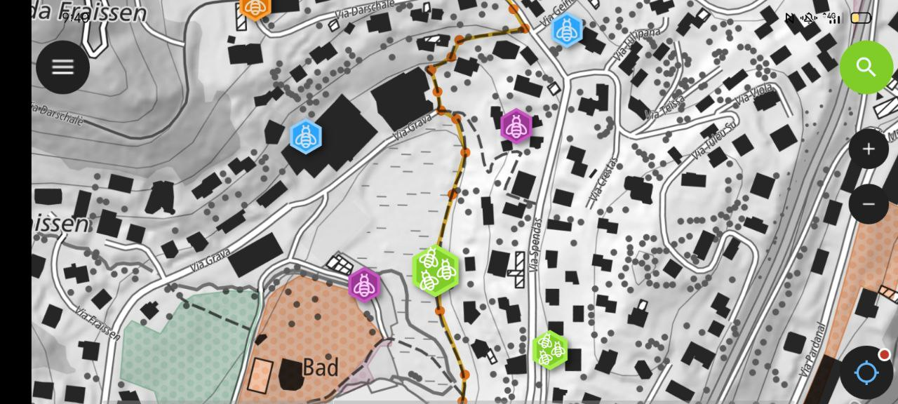
Minimalistisches UI
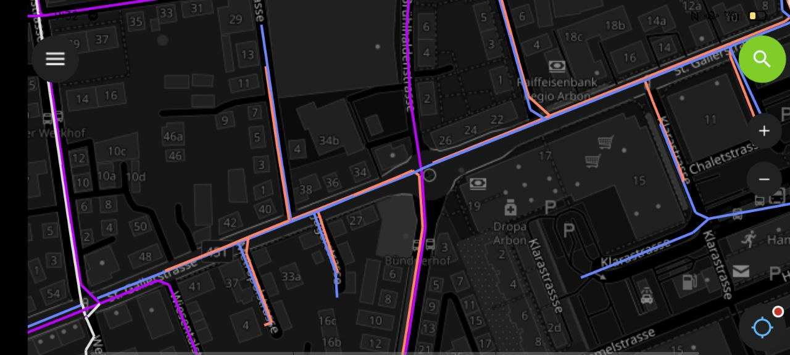
Wunderschöne Kartografie
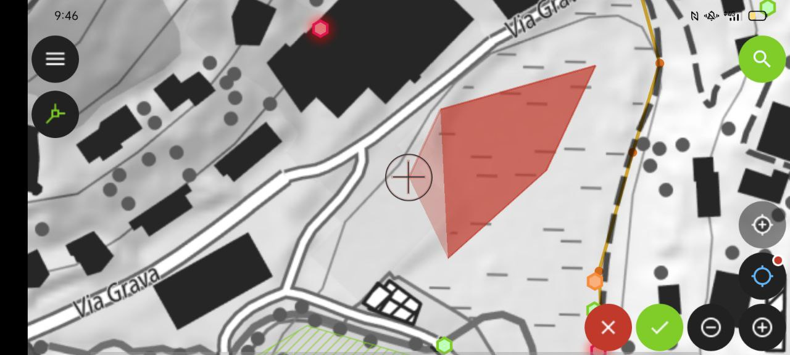
Mächtige Werkzeuge
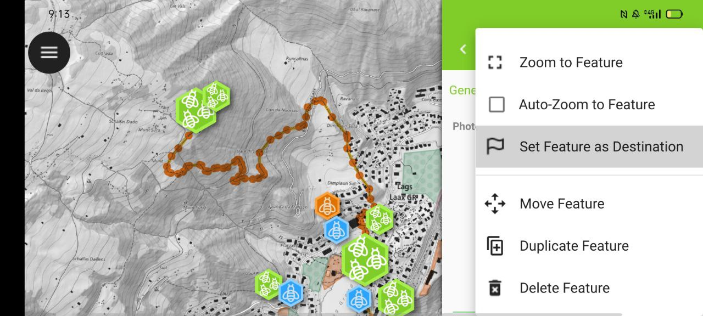
Effiziente Interaktion
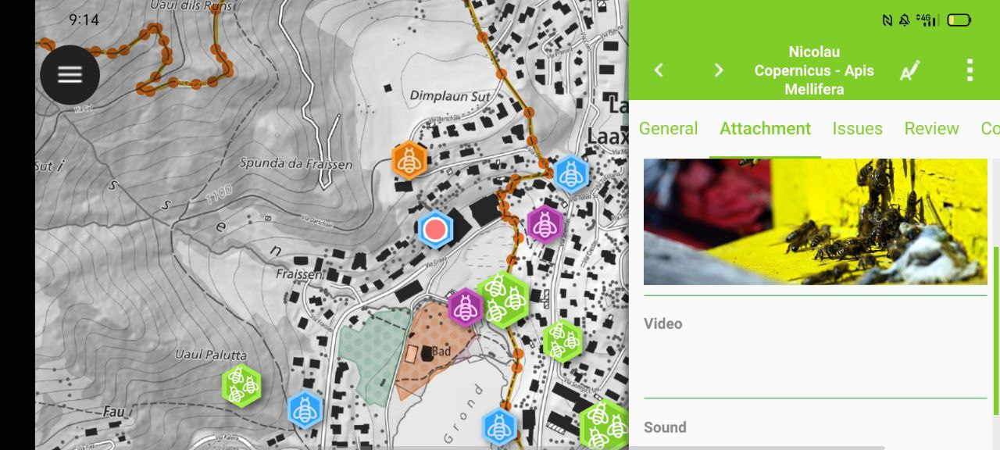
Vorteilhafte Integrationen
 Professionelle Hardware
Professionelle Hardware
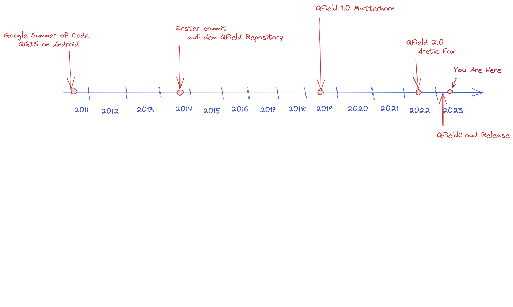
Unterstützte Plattformen
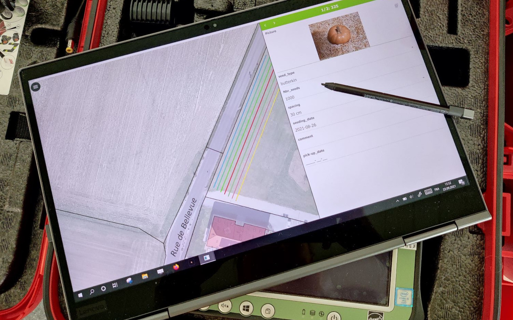
QField on Windows
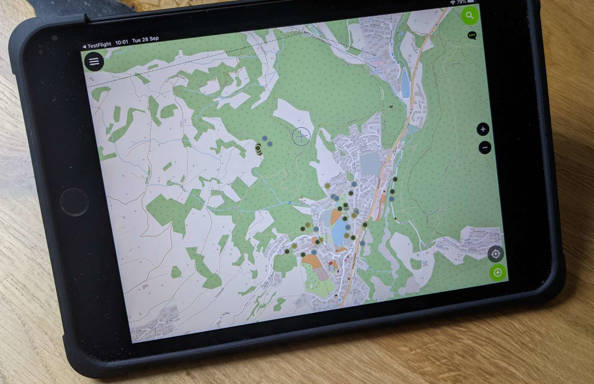
QField on iOS
GPS and Tracking

Integration von Antennen
 Mittelung der Position
Mittelung der Position
Navigation und Ausstecken
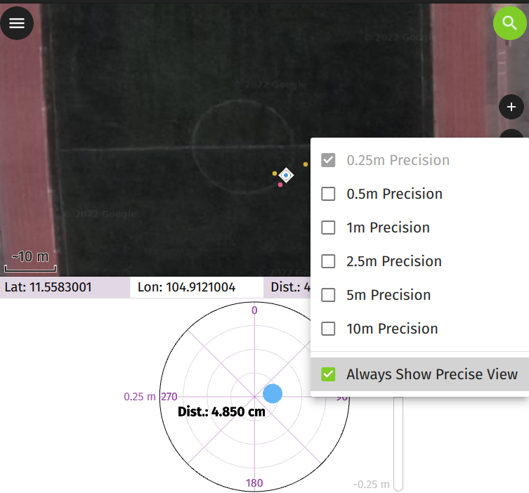
Ausstecken mit der präzisen Ansicht
Arbeiten mit Attributen

QR Code Reader
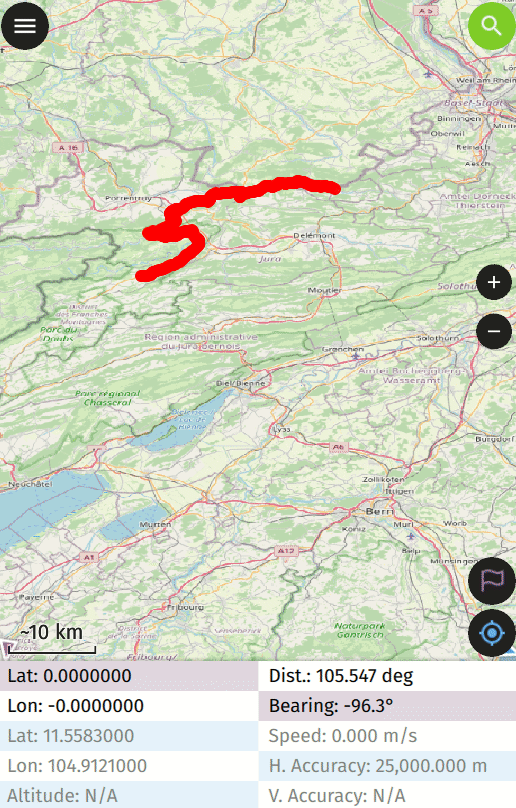
Zeit
Atlas Druck
Höhenprofil
Dark Mode
Multimedia
Rotation
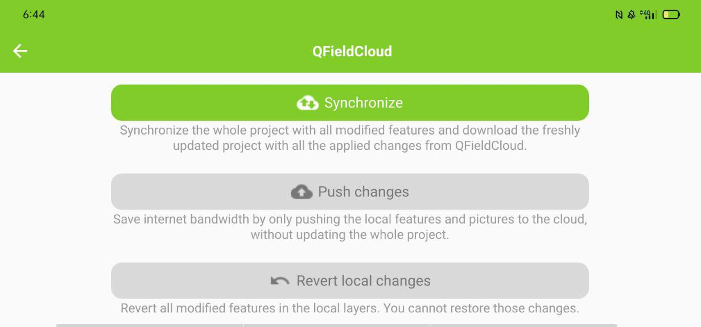Nahtlose Synchronisation
Individuelle Datensätze öffnen

 QFieldCloud
QFieldCloud
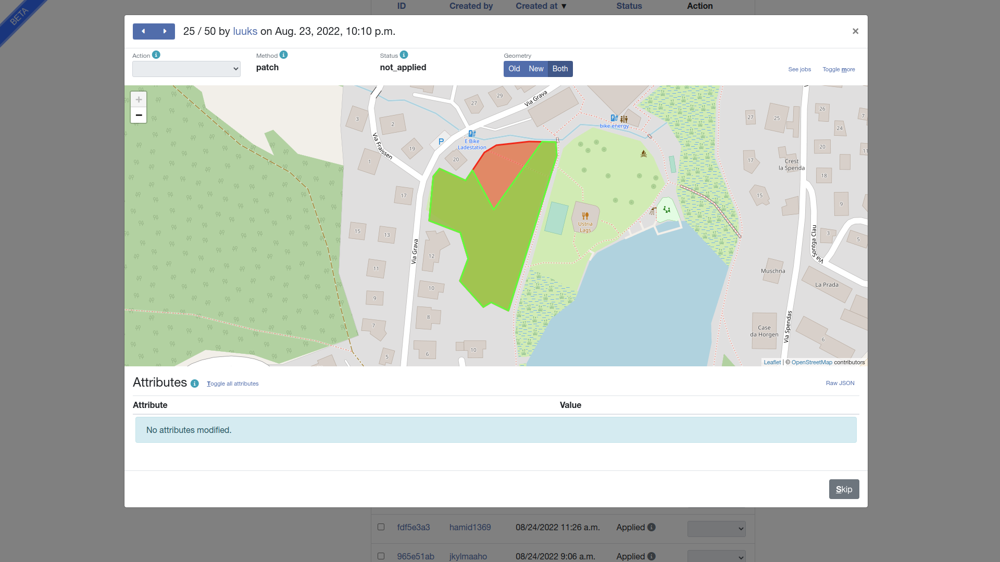
QFieldCloud
40K users
Weiteres ...
Mächtige Attributformulare
Spezielle Widgets
Spezielle Widgets
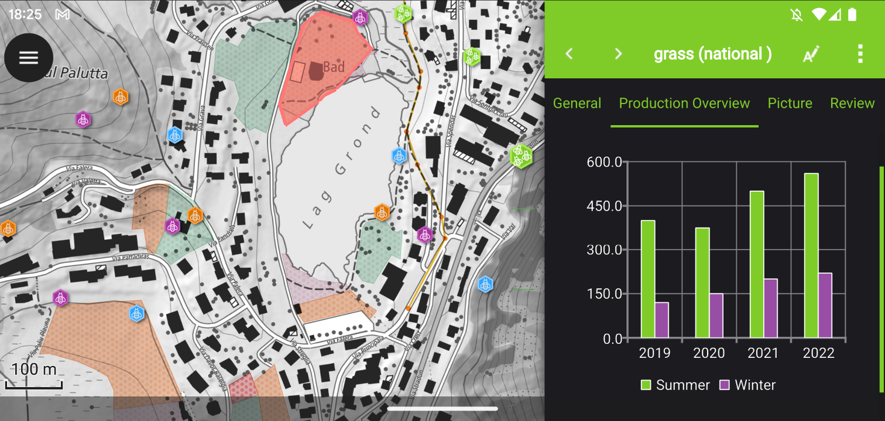
Suche nach Attributen und Koordinaten
Messwerkzeug
qfield.org/get
2.8.3 Insightful Indri
750K Android, 65K iOS and xx Windows downloads
4.8⭐ on 5.7K reviews
215K users monthly
50K users QFieldCloud
UN Opensource Geo-data collection tool
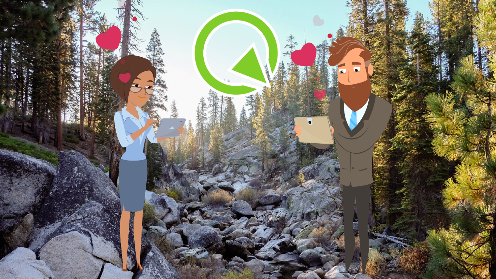
Mach mit
 Deine eigene App
Deine eigene App